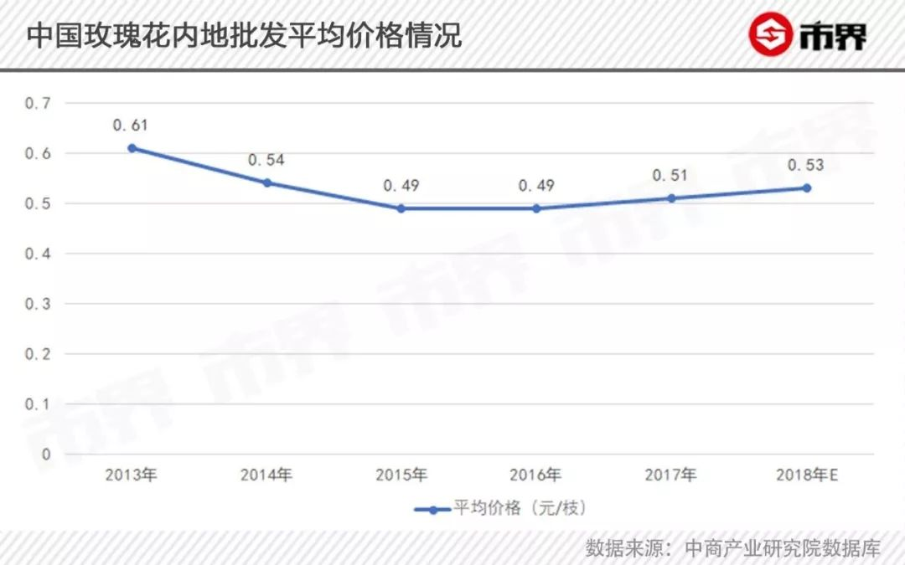
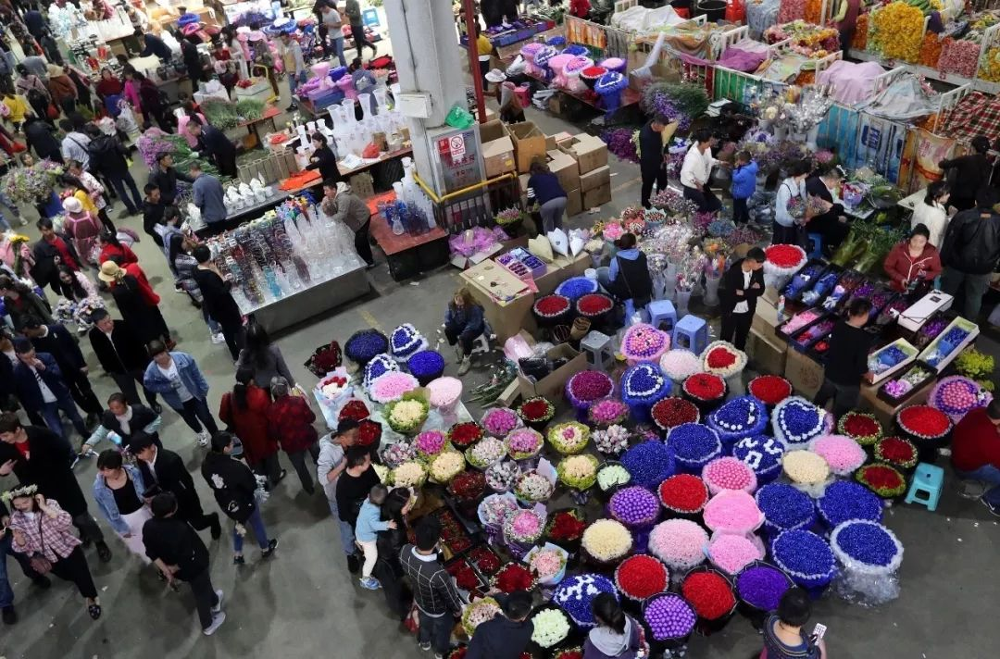
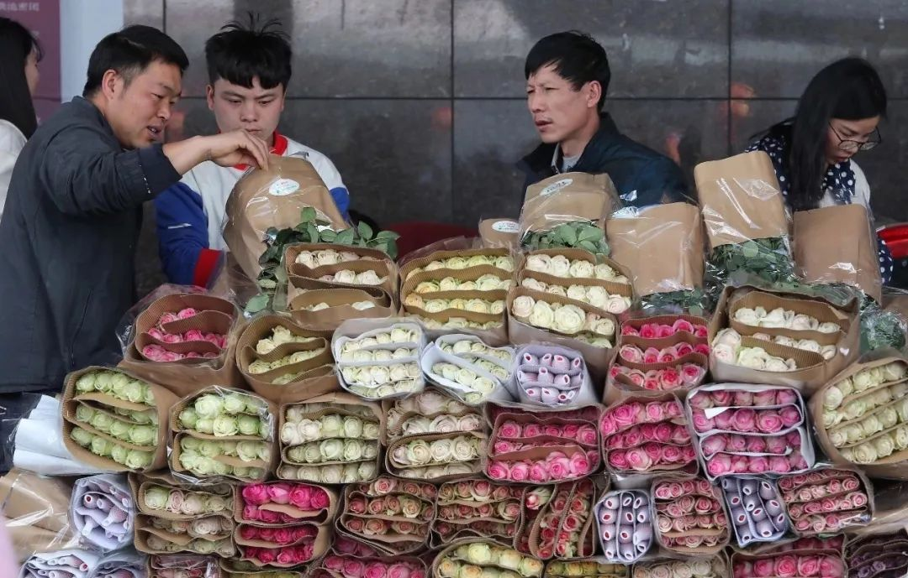

肺炎时期的爱情：即使直面死亡，我也要爱
原文链接 备份链接 白朗宁曾说：“我是幸福的，因为我爱，因为我有爱。”在这场疫情面前，除了温馨的小爱，更有大爱无疆。 文 | 薛雨霏 赵琼 张遥 丁宁 林铭豪 编辑 | 沈小山 “无论何时何地，爱情始终都是爱情，只不过距离死亡越近，爱就越 …
以下文章来源于市界 ，作者有趣有料的

灾难具有两面性。在惋惜花农遭受重大损失的同时，也侧面反映出来以云南花卉行业为代表的中国鲜花行业的问题。
文 | 李曙光 齐敏倩
编辑 | 廖影
“找我买花吧，一扎玫瑰20枝才二十几块钱，真的不贵。”情人节早上，一条“一天上百万枝玫瑰被销毁”的消息上了热搜后，李欣留下这样的评论。
她已经通过社区团购等方式卖了一年多鲜花，今年的情人节是她从业以来经历过生意最差的时候。去年情人节，她光是社区团购就卖了几十单，而今年，她一共只卖了3单。
李欣的进货渠道是云南斗南花卉市场，这里是亚洲最大的鲜切花交易市场。与往年情人节期间市场上摩肩接踵不同的是，今年来拍卖的花农甚少。即便价格只有平时的三分之一，仍有不少卖不出去的玫瑰花被无奈的丢在垃圾桶里。
疫情之下，本该甜蜜的情人节，却成了“一天百万支玫瑰花被销毁“的无奈。但若深究，疫情黑天鹅或只是一个引子，背后引爆的是云南花卉产链积弊已久的弊病，现在只是被无限放大了。

遇冷的玫瑰花

李欣最初因为单纯喜欢鲜花就在家里做起了小小的鲜花生意，她会统计出每周订花的客户量，然后在斗南花卉市场的App上统一下单，寄到家里，简单修剪后，等着客户上门取花。
每年12月到次年5月份，是她和大多数花店生意最好的时候。鼠年春节之前，鲜花价格大涨。一扎普通玫瑰花五六十块钱也有不少人买。
圣诞、元旦、情人节、妇女节、清明节和母亲节等上半年的节日是鲜花销量最好的时候。李欣记得，去年2月初她就开始接情人节的单，光是社区团购就有几十单。可今年，她一共才卖出去3束花。
疫情导致情人节鲜花需求锐减，价格也大幅下降。李欣向市界展示，她用来采购的斗南花卉市场App上，普通玫瑰花的价格降到0.15元，还是卖不出去。
斗南花卉市场工作人员接受媒体采访时说，今年玫瑰花价格只有去年同期的三分之一，最便宜的玫瑰花甚至只卖7、8分钱一支，鲜花需求量只有往年的30%—40%。

“花贱伤农”，需求少、价格低，让不少花农犯了愁。王晓做鲜花电商生意，云南的花农是她的进货渠道。去年情人节“一花难求”，和她合作的花农卖光了所有的花也供不上市场需求。但在今年，鲜花销量差，价格低，人工、交通也不方便，许多花农只能任由自己种的鲜花烂在地里或者倒掉。
在云南做鲜花网络批发生意的张天，从1月22号以来，一直处于歇业状态。一般情况下，他的公司一天可以批发出去上万把鲜花。今年春节，他的生意无法跟往年比，“可能是今年春节早，大家都很仓促，销量稍微差点。”
据张天介绍，每年12月、1月和2月份，这三个月的鲜花成交量可以占到全年的一半左右。如今疫情来袭，大家都不敢贸然开工，他和花农们只能等待下个花期的来临。

▲云南斗南花卉市场是亚洲最大的鲜切花交易市场
鲜花行业的困境很快转导到上游卖种球的商户身上。滇峰园艺的老板童丽萍在斗南市场经营花卉种球，还开了淘宝店。她说，正常情况下，花农会提前7—10天准备情人节的花朵，拿到斗南市场拍卖，那是整个市场最热闹的时候。
童丽萍告诉市界，鲜花交易一般是在晚上，情人节期间，他们市场上人挨着人，走动都很困难。而今年，来拍卖的农户非常少，她经常看到卖不出去的玫瑰花被扔在市场的垃圾桶里。
她家的种球除了网络销售，也会卖给花农，春天正是买种球的季节。往年春天，她光是一个淘宝店一天就能卖几万块钱，但是现在一天的销量基本就是几千块钱。一般正月十五之后，她就开始陆续接农户的单，今年至今为止，她一个花农的订单都没接到。
差价几十倍背后的鲜花潜规则
斗南花卉市场是中国和全亚洲最大的花卉市场，位于风景秀丽的云南省昆明市的滇池东岸斗南村。其距离昆明机场12公里，交通位置优越。该村所在的镇被称为“中国花木之乡”。
“花”是云南的靓丽名片之一，从上世纪80年代至今，云南当地大力扶持用各种措施推进“云花”产业链的迈进，让云南成为亚洲鲜花中心。

根据《2018年度云南花卉产业发展公报》显示，“2018年全省鲜切花产量达112.2亿支，产值100.6亿元，云花产值首次突破百亿元大关。鲜切花种植面积为22.7万亩，产销量连续25年保持全国领先，占全国鲜切花总产量的53%”
云南鲜切花销量占全国市场的70%左右以上。10%出口到日本、泰国、新加坡、韩国、俄罗斯、台湾、香港等40多个国家和地区。
在产业链背后是十余万云南花农。每天凌晨，农户从自家地里收获鲜花之后，通过昆明国际花卉拍卖交易中心进行筛选与拍卖，仅有 30％的优质花卉最终能够通过筛选，以高价运往全国乃至全世界，近 70％的鲜花质量都因不达标而被低价贱卖。
这里鲜切花会被分为ABCD四个等级，低等级和高等级的差价高达几十倍。
评定的标准一般是根据花、茎、叶的完整、均衡、新鲜和成熟度以及色、姿、香味等综合品质进行目测和感官评定。
斗南花卉市场的管理人员董瑞称，往年的A级玫瑰花每支价格在2.5元和3元以上，最高价可以达到5元，而C级和D级玫瑰花每支仅需几毛钱。
花农们都知道：种出一株高品质的鲜花，将会是比几十株普通花更有价值。
现实是云南省的鲜切花多数由个体花农生产， 而大多数花农都没有接受过专业的科学种植技术培训， 导致云南花卉产品的标准化不够， 产品质量参差不齐。
所以云南的鲜花产业链虽然整体繁荣，但由于主要是以小农经济为主，整个产业链薄弱。
在今年遇到了这样雪上加霜的行情，便将这种困境放大。由于受雪灾和新冠肺炎疫情影响，今年云南花卉产业遭受重创。据昆明国际花卉交易中心预测，云南鲜花行业第一季度损失将达40亿左右。
据报道，年前花农们在斗南的供货量仍有每日80万枝，1月27日起仅仅有三四十万枝，而拍卖成交额也仅为50%—60%，就在去年七夕拍到每枝4元的红玫瑰，最近的最低成交价跌到了每枝5分钱。

花农们深知自己的玫瑰花无法走出云南省，大大小小的种植户选择让所有的玫瑰花在地里开爆掉，再剪掉当垃圾处理，生怕影响后续的鲜花种植。
所以才有了”一天就有100多万支玫瑰花被销毁”的现象。
灾难具有两面性。在惋惜花农遭受重大损失的同时，也侧面反映出来以云南花卉行业为代表的中国鲜花行业的问题。
被“嫌弃”的云南鲜花
鲜花也是有技术和专利的，也讲究国际竞争力，而那些高端的具备相应技术专利的鲜花品种在国际市场上不仅高价并且供不应求。
花之国荷兰平均每年能产出 800 到 1000 个新品种， 这使其在高端花卉市场占主导地位，高档市场的鲜花价格远远高于低档鲜花。
荷兰的花卉产业是一门科学技术。建立了具体的科研体系和运行机制。 在荷兰， 花卉的研究机构数量非常多， 各个研究机构都有自己的主要研究方向。 主要分为3个层次：大学研究院、 国家研究院和企业研究院，分别负责科研、 推广、 生产和市场，分工明确， 相互合作，军团作战。
云南花卉则是小农经济为主，自主知识产权发展相对滞后，自主知识产权的花卉新品种非常少。大宗商品花卉的种源供应主要依赖国外进口。
据云南大学学者李如是发表的《整合云南鲜花销售模式》一文中指出：“我国的花卉种植总面积居世界第一， 比“花之国”荷兰大 10 倍，但荷兰的花卉出口量却占世界花卉市场的 70%以上，我国只占到 0.5%。 云南的鲜花产业花了大力气，却只有蝇头小利。”
“荷兰2013 年每公顷平均产值约人民币 133 万元人民币，云南省 2013 年平均产值约21.92 万元，相差近 6 倍。”
云南的鲜花总产量很大，但是出口比例却很小，虽然近年来经过一番努力有所增长，但是2016 年的数据是云南省出口仅占花卉总销售额10% 左右。

此外，由于花卉是一种极易损耗的产品，对于冷链运输的要求非常高。斗南市场虽然靠近昆明机场，但是仅靠昆明机场的运力是有限的，昆明至欧洲、东亚等偏远地区没有直达航班，出口到这些偏远的地区的花需要进行多次周转，运输时间长，鲜切花品质得不到保障。国内花卉运价是其它国家运价的两倍以上，这成为制约花卉出口的另一限制因素。
并且云南的花卉由于很多无法做边采收边消毒，大多鲜花只作初级处理，没有形成标准化的工业流程和运作模式，这大大降低了云南鲜切花的保鲜度、瓶插时间、正品率及鲜花品质。
最终导致了云南鲜切花除了在本地的收购的超低价优势外，没有办法形成更多的产业附加值。
而这种薄弱的产业链，碰上不期而遇的新冠肺炎黑天鹅时，品质低、工业化程度低，出口量少的赤裸现状将会无限放大疫情的影响，使产业链重创。
另一个放大因素是，国人的鲜花消费习惯不像欧美，欧美日常就有习惯消费鲜花，没事往家里买一束鲜花都是司空见惯的事情，但是中国不是。
在荷兰，日常鲜花消费占比高达60%，美国则是40％，中国这一比例历年只有5%上下。国人的鲜花消费场景主要集中在节日和婚庆。
打铁尚需自身硬，疫情黑天鹅是一个引子，“云南花农情人节一天销毁百万支玫瑰花”也是一个引子，引爆的是云南鲜花产业乃至中国鲜花产业的薄弱环节。倘若云南花卉具有极强的品质和完善的全球物流产业链，出口额必然大幅提高，护城河加深，疫情黑天鹅的影响将会大大减弱。
这是一个深远的命题和任务，花农的收入和城市的产业经济规划牵扯其中，虽然云南近些年一直在努力改善花卉产业质量，但是上述的花卉产业薄弱基本盘，并不是那么容易改变。
花卉产业被称为21世纪的朝阳产业，既是朝阳必然有无数人在追逐。
花卉产业到今天已经脱离了传统农业耕作的认知，在培育、研发和加工领域都面临着极强的科技竞赛。需要个人、企业、政府的共同培育和进化。
这或是中国诸多行业的一个缩影。竞争悄然而至，偏安一隅的小富即安、农耕思维已然无法面对加剧的竞争环境和突至的黑天鹅，改变是痛苦的，但经济动能转换既是国家需求，也是市场使然，更应是每个从业者的认知。
唯有如此才是中国，企业，个人能持续向好的基础。
（文中李欣、张天、王晓均为化名）

每人互动
今年情人节你收到玫瑰了吗？

文章授权转载自市界（ID：ishijie2018）


原文链接 备份链接 白朗宁曾说：“我是幸福的，因为我爱，因为我有爱。”在这场疫情面前，除了温馨的小爱，更有大爱无疆。 文 | 薛雨霏 赵琼 张遥 丁宁 林铭豪 编辑 | 沈小山 “无论何时何地，爱情始终都是爱情，只不过距离死亡越近，爱就越 …
原文链接 备份链接 “ - 疫 情 之 下 - 这二十多天，我有足够的时间陪伴家人，正是有无数人在前方流泪、流汗、流血地付出，才有我们平静安心的生活，我会珍惜每一天。 ” 1 闹铃响了，又是新的一天，拉开窗帘，红彤彤的鸡蛋大小的太阳在滇池 …
原文链接 备份链接 岛语 2019年9月10日，恰巧在教师节这一天，湖北正和岛首位蓝色岛邻正式登岛！他是湖北省政协常委、省统计局副局长、中南财经政法大学教授、博导，横跨政、学两界，极其关注民营企业的发展；他被中国网民称为“中国最具个性官 …
原文链接 备份链接 摘要：这是几对医护夫妻的故事。他们有的结婚超过十年，有的还没来得及举办婚礼。他们在同一栋楼里工作，却很少见面，或者因为穿着防护服，差点没认出彼此。情人节这天，他准备了一盒费列罗巧克力，但为了避免传染的风险，隔着十米远放 …
原文链接 备份链接 “ - 疫 情 之 下 - 疫情过后，你最想见的人是谁，最想做的事是什么？我想，等疫情过后，我最想见的人就是我的妻子和女儿，我想牵着你们的手，去我工作和生活的城市看一看，去吃一碗热干面，去江汉路上走一走，去看樱花盛开， …